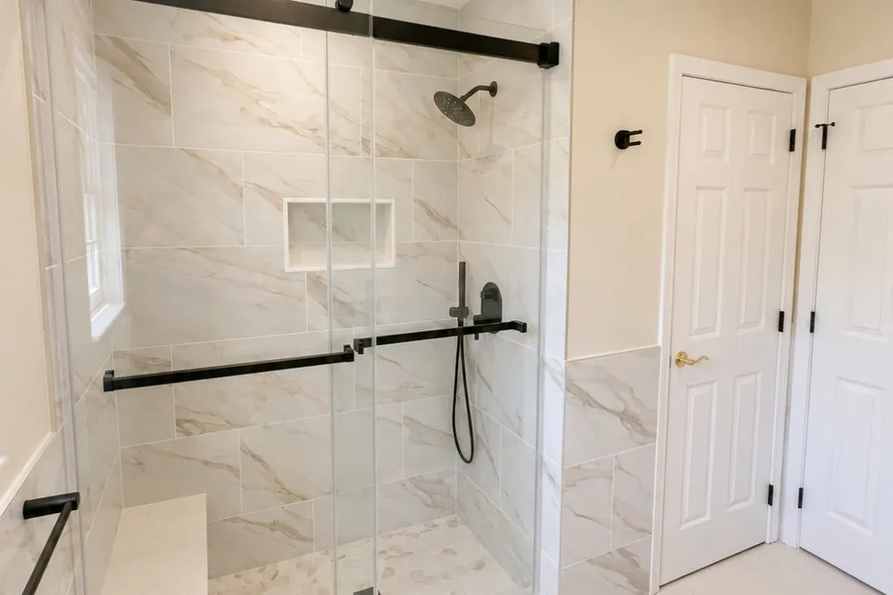
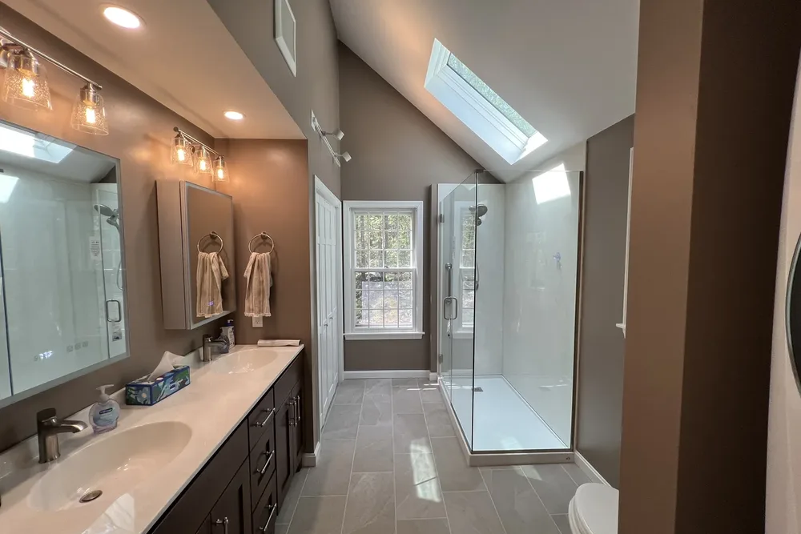
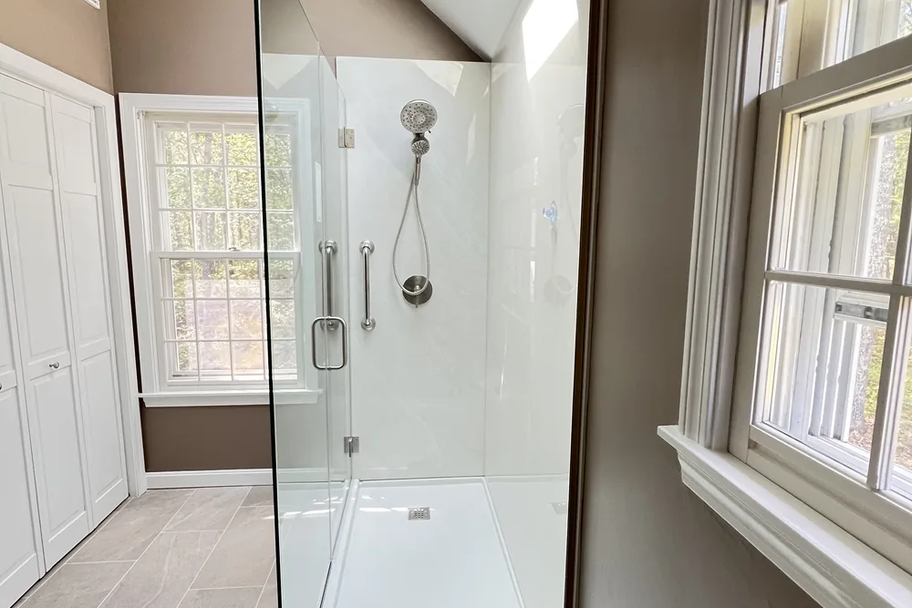
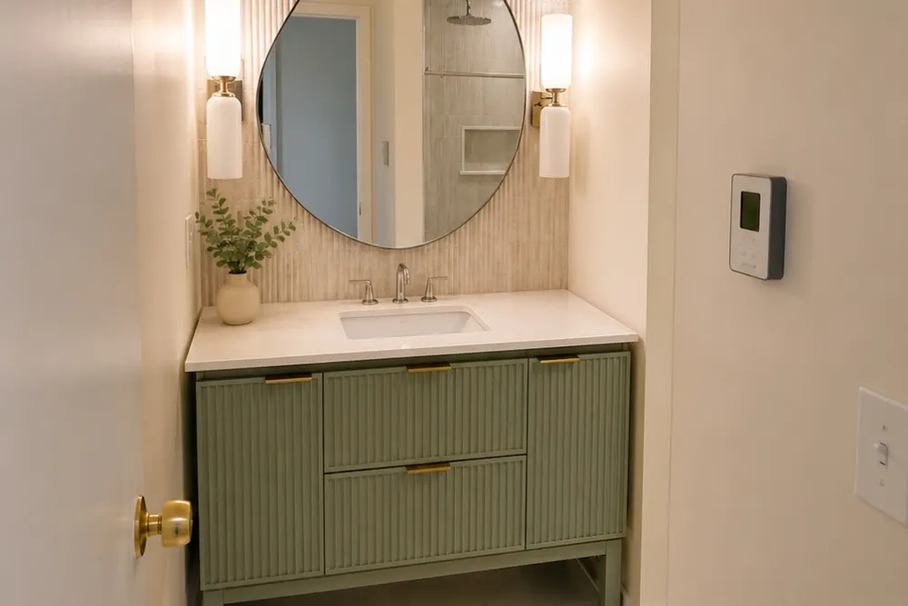
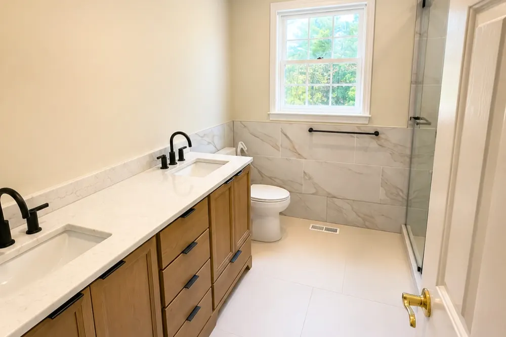
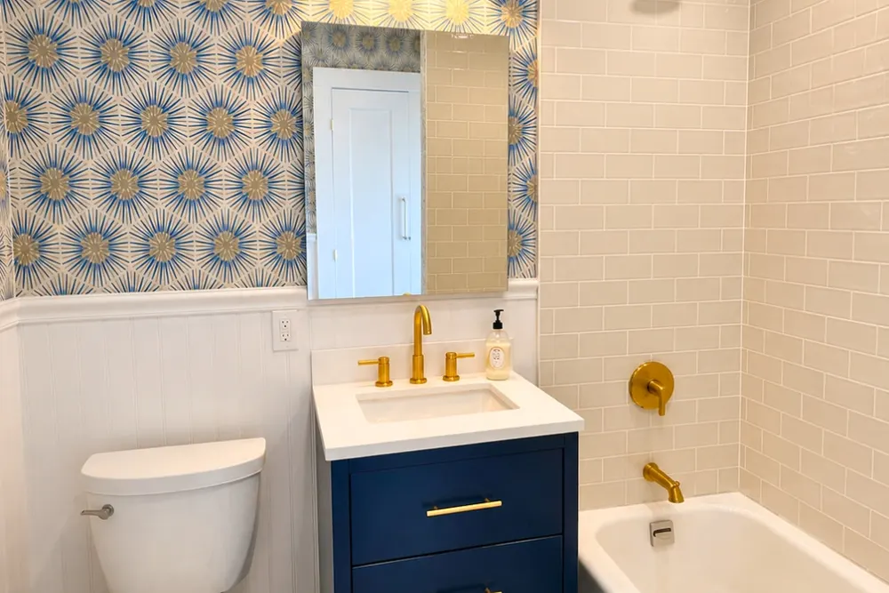
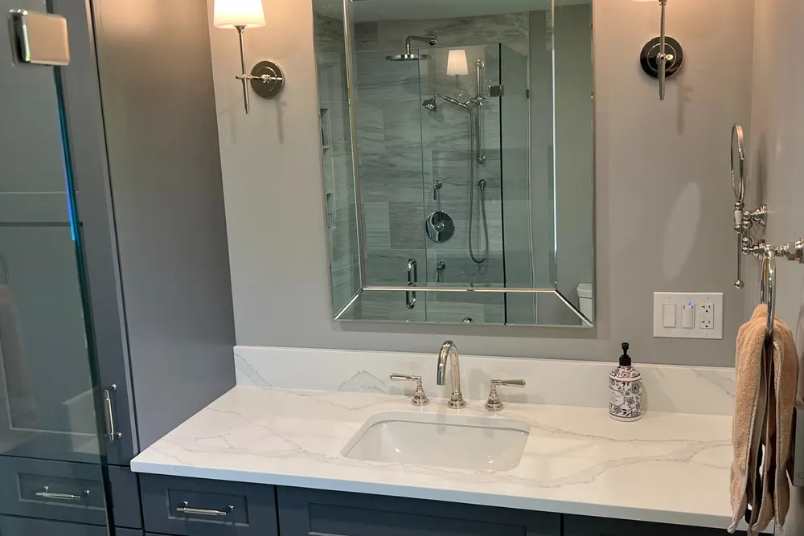
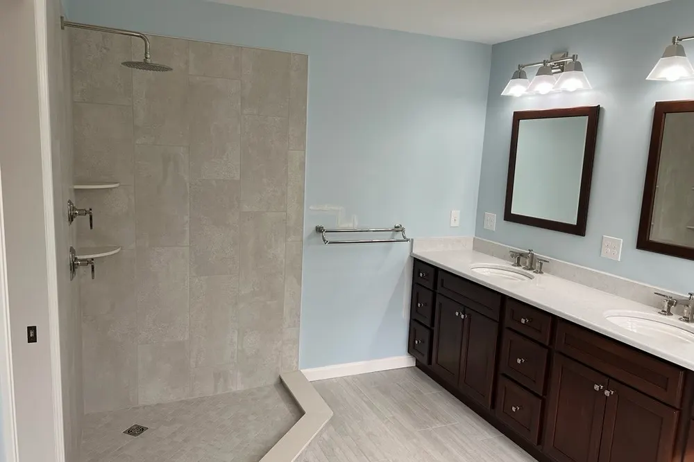
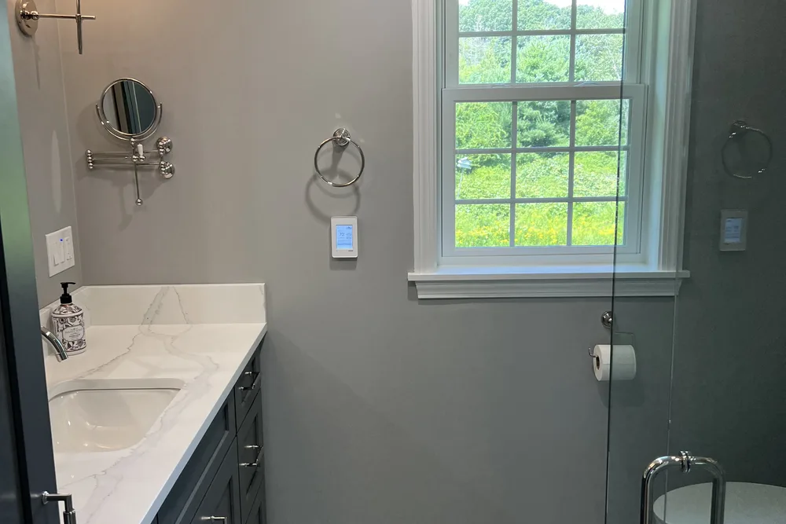
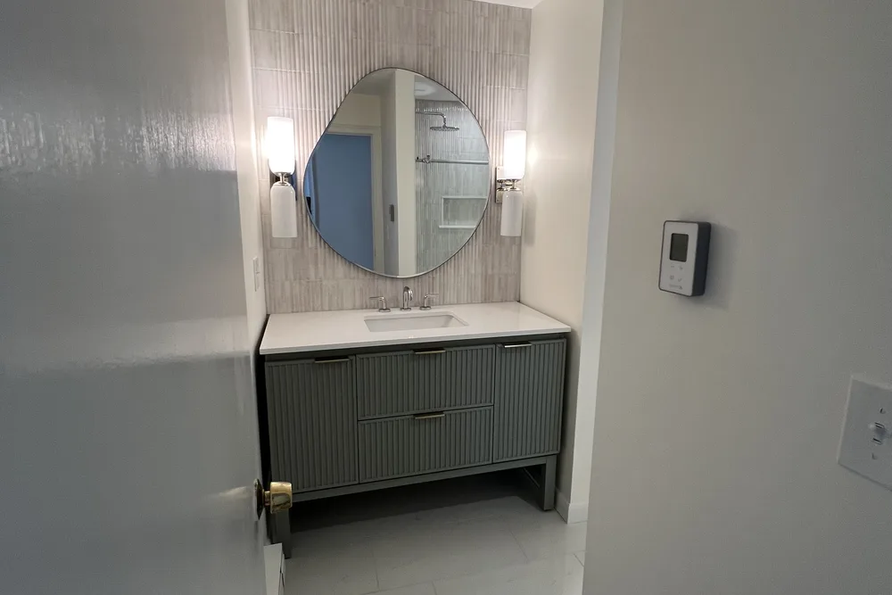

Bathroom remodeling contractors in Massachusetts
Bathroom remodeling contractors in Massachusetts, from demolition to the last fixture
Bathroom remodeling contractors at DeFaria Construction rebuild hall baths, primary bathrooms, half baths and showers across Essex and Middlesex County. One owner-led team handles demolition, plumbing coordination, waterproofing, tile, vanity and finish, with a fixed written price.
Our work
A real DeFaria bathroom remodel, filmed on the job
One of our bathroom projects from start to finish. It is not necessarily in your town, but it is the same crew and the same standard of tile, glass and finish you can expect.
Get a Free Estimate
The short answer
What do bathroom remodeling contractors do?

Bathroom remodeling contractors take a bathroom from what it is today to a finished, permitted room you can use every day. That means demolition, fixing whatever the old bathroom was hiding, coordinating licensed plumbing and electrical work, waterproofing the shower, and installing tile, vanity, fixtures, glass, lighting and paint.
- Full hall bath and primary bathroom remodels.
- Tub-to-shower conversions and custom tiled walk-in showers.
- Half baths and powder rooms.
- Curbless and step-in showers for aging in place.
- Basement bathrooms, including ejector pump setups.
- Subfloor, framing and rot repair found behind old tile.
Homeowners also search for us as bathroom remodelers or bathroom renovation contractors. The words change, the job is the same: one company responsible for the whole room, not five trades you have to manage yourself.
Cost
How much does a bathroom remodel cost in Massachusetts in 2026?

Labor and permitting around greater Boston run above the national numbers you see in online calculators. These are the typical 2026 ranges we see on the North Shore and in Middlesex County:
| Project | Typical 2026 range | What usually drives it up |
|---|---|---|
| Half bath or powder room | $6,000 to $15,000 | Moving the toilet or sink, wall tile, custom vanity |
| Hall bath, cosmetic refresh | $10,000 to $20,000 | New flooring, new tub surround |
| Hall bath, mid-range full remodel | $20,000 to $40,000 | Tile to the ceiling, new valves, subfloor repair |
| Primary bathroom remodel | $35,000 to $80,000+ | Layout changes, large tiled shower, double vanity, heated floor |
| Tub-to-shower conversion | $9,000 to $20,000 | Curbless entry, frameless glass, moving the drain |
| New basement bathroom | $25,000 to $55,000 | Breaking the slab, ejector pump, moisture control |
These are market ranges, not a quote. Your final price is set in a written, itemized estimate after we see the room, because the same bathroom can land at $25,000 or $50,000 depending on your choices and what the walls are hiding.
For a line by line breakdown, read our bathroom remodel cost guide for Massachusetts.
Scope
What is included in a DeFaria bathroom remodel
Every estimate spells out what comes out, what goes in and who does each part. On a typical full remodel the scope includes:
- Protection of floors and the path to the bathroom, plus dust control.
- Demolition down to the studs and subfloor where the scope calls for it.
- Repair of rotted subfloor, joists or wall framing found during demolition, priced openly.
- Plumbing rough-in and fixture setting by a licensed plumber, with permit.
- Electrical work by a licensed electrician: GFCI outlets, lighting, exhaust fan, heated floor if chosen.
- Cement board or foam board walls and a waterproofing membrane in wet areas.
- Tile for floors, shower walls, niches and benches.
- Vanity, countertop, mirror, toilet, accessories and glass.
- Trim, doors, paint and a final clean before the walkthrough.
If something is not included, such as a custom glass enclosure ordered separately, it is written down. No surprises on the last day.
Process
Our bathroom remodeling process, step by step

A bathroom is a small room with a lot of trades in it. The order matters, so we run it the same way every time:
- Walkthrough and measurements, with a look under the floor and behind access panels.
- Fixed, itemized estimate and a simple layout or selections list.
- Material orders: tile, vanity, valves and glass, before demolition starts.
- Permits pulled with your town building, plumbing and wiring inspectors.
- Demolition and repair of anything hidden behind the walls.
- Rough plumbing and electrical, then inspections.
- Walls, waterproofing and a flood test of the shower pan.
- Tile, grout and sealing.
- Vanity, fixtures, glass, lighting, paint and trim.
- Final inspection and a walkthrough with you before sign-off.
You get updates at each stage and a clean, closed work area at the end of every day.
Permits and code
Permits, licensed trades and the Massachusetts code
Bathroom work in Massachusetts is regulated more tightly than in many states. Plumbing can only be done by a licensed plumber under a permit from your town plumbing inspector, and new wiring is done by a licensed electrician under an electrical permit. Changes to walls, framing or windows fall under the Massachusetts State Building Code and need a building permit.
- Plumbing permit and inspection for new or moved fixtures, valves and drains.
- Electrical permit for new circuits, GFCI protection, lighting and fans.
- Building permit when walls, framing or windows change.
- An exhaust fan ducted to the outside, not into the attic.
- Home Improvement Contractor registration for work on an existing home.
DeFaria pulls the permits for the work we perform and schedules the inspections. Before you hire anyone, ask who will pull each permit. If the answer is you, that is a red flag.
Real DeFaria bathroom
Before and after: a dated bath turned into a bright primary bathroom
The same bathroom, before and after our remodel. The old vanity, wall lights and small tile floor came out. The room got a long vanity, plank-look tile, new lighting under the skylight and a glass shower at the end of the room.


Materials
Tile, vanities, showers and finishes that last

The materials you see matter, but the ones you never see matter more. Behind every tiled shower we install a cement or foam board wall and a waterproofing membrane, then test the pan before tile goes on.
- Porcelain tile for floors and walls: dense, low maintenance and available in marble and wood looks.
- Large format wall tile for fewer grout lines, or classic subway tile for older homes.
- Pressure-balanced or thermostatic shower valves.
- Vanities in stock, semi-custom or custom sizes, with quartz or stone tops.
- Frameless or semi-frameless glass doors, or a fixed glass panel for walk-in showers.
- Quiet exhaust fans vented outside, sized for the room.
- Electric radiant heat under the floor tile, if you want warm floors in January.
Looking for ideas for a tight space? Our small bathroom remodel ideas for North Shore homes walks through layouts that work.
Real DeFaria work
Bathrooms we remodeled, not stock photos
A few recent DeFaria bathrooms, photographed on the job. Different homes, different budgets, the same attention to tile lines, caulk joints and trim.






Homes we work on
Bathrooms in Capes, Colonials, splits and older North Shore homes
Most bathrooms we remodel are in homes that are 40 to 120 years old. Each style comes with its own surprises, and planning for them is what keeps a schedule on track.
- Cape Cods: small baths under sloped ceilings, where shower height and the window placement drive the layout.
- Colonials: a hall bath upstairs shared by the family, often with an original tub and tired subfloor.
- Split-levels and raised ranches from the 1960s and 1970s: original pink or green tile, steel tubs and undersized fans.
- Older North Shore homes in Lynn, Salem, Beverly and Marblehead: plaster walls, cast iron drains and floors that are not level.
- Condos: association rules, shared drain lines and limited work hours.
We open these rooms expecting to find something, price the likely repairs up front where we can, and show you what we find before fixing it.
Common mistakes
Common bathroom remodel mistakes and how we avoid them
Most bathroom problems show up a year or two later, not on the day the room is finished. These are the mistakes we see most when we are called in to redo someone else's work:
- Tile over drywall or old tile in the shower, with no waterproofing behind it.
- A shower pan with no slope or no flood test, so water sits under the tile.
- An exhaust fan vented into the attic, or no fan at all, which leads to mold.
- Rotted subfloor left in place and covered with new flooring.
- Ordering the vanity and glass after demolition, which leaves you without a bathroom for weeks.
- Unpermitted plumbing that becomes a problem at sale time.
Our process is built around avoiding each of these, which is why the waterproofing and inspections happen before any tile goes up.
Timeline
How long does a bathroom remodel take?
Once materials are on site, a typical hall bath takes about three to six weeks, and a primary bathroom with a layout change often takes six to ten weeks. A half bath or a tub-to-shower conversion can be faster.
| Project | Typical working time |
|---|---|
| Half bath or powder room | 1 to 3 weeks |
| Tub-to-shower conversion | 2 to 4 weeks |
| Hall bath full remodel | 3 to 6 weeks |
| Primary bath with layout change | 6 to 10 weeks |
Inspections, special order tile and custom glass are what usually set the calendar. If you only have one bathroom, tell us at the walkthrough and we will plan the order of work to keep the time without a toilet as short as possible.
Aging in place
Safer bathrooms: curbless showers, grab bars and comfort height
Many homeowners on the North Shore plan to stay in their homes for a long time. A bathroom is the easiest place to make that safer, and the best time to do it is during a remodel, when walls are open.
- Curbless or low-threshold showers, which may require lowering or reframing the floor.
- Blocking in the walls so grab bars can be added now or later.
- Comfort-height toilets and a handheld shower on a slide bar.
- Slip-resistant floor tile and better lighting.
- Wider doorways where the framing allows it.
None of this has to look clinical. Done well, it simply looks like a well-designed bathroom.
Choosing a contractor
How to choose bathroom remodeling contractors
Before you sign with anyone, ask these questions. A good contractor answers them without hesitation:
- Who pulls the plumbing, electrical and building permits?
- What waterproofing system goes behind the shower tile, and do you flood test the pan?
- Is the price fixed and itemized, and how are hidden repairs handled?
- When will the vanity, tile and glass be ordered?
- How many days will we be without the bathroom?
- Can I see photos of your own bathrooms and read real reviews?
- Who is my contact every day?
At DeFaria the last answer is simple: Luiz DeFaria, the owner, leads every bathroom himself.
Reviews
What homeowners say about their DeFaria bathrooms
DeFaria Construction has a 5.0 rating from 15 reviews on Google. See all reviews on Google.
DeFaria Construction completed a full remodel of our master bathroom to our great satisfaction. Demolition down to the studs and subfloor was completed quickly. Plumbing changes and waterproof underlayment were quickly installed. Tiling of the floor and shower were beautifully done. Installation of…
Extremely happy that I went with DeFaria Construction to renovate our half bathroom. What I appreciated most about working with Luiz is that him and his crew were honest, reliable and they really cared about the details that were important to me! Everyday they came as scheduled and every evening…
Excellent work! I’m extremely happy with the results of my bathroom. Defaria Construction did an amazing job and was very professional, careful, and detail-oriented throughout the entire project. The workmanship and finishing touches were outstanding. You can really tell when a company takes pride…
Luiz’s work is fabulous. Luiz renovated two bathrooms and our kitchen. Each step in the process moved along quickly and we finished earlier than expected. The crew was always pleasant to be around. We are very pleased with the quality of everything that Luiz did, and the price was reasonable. We…
FAQ
Bathroom remodeling questions homeowners ask
How much does a bathroom remodel cost in Massachusetts in 2026?
Most full bathroom remodels in Essex and Middlesex County land between about $20,000 and $45,000 for a mid-range hall bath. A cosmetic refresh usually starts around $10,000, a half bath runs roughly $6,000 to $15,000, and a primary bathroom with layout changes often reaches $35,000 to $80,000 or more. You get a fixed, itemized price in writing after the walkthrough.
Do I need a permit to remodel a bathroom in Massachusetts?
In most cases, yes. Moving or adding plumbing needs a plumbing permit pulled by a licensed plumber, new circuits or fixtures need an electrical permit pulled by a licensed electrician, and changes to walls or framing need a building permit. A simple swap of a vanity or toilet in the same place may not, but your town decides. DeFaria pulls the permits for the work we do.
How long does a bathroom remodel take?
A typical full bathroom remodel takes about three to six weeks of work once materials are on site, and a large primary bath with a layout change can take six to ten weeks. Custom glass, special order tile and vanities are the usual reasons for waiting, so we order them before demolition starts.
What should I ask bathroom remodeling contractors before hiring?
Ask who pulls the plumbing and electrical permits, which waterproofing system goes behind the shower tile, whether the price is fixed and itemized, how they handle rot found behind the walls, how long you will be without the room, and who your contact is every day. Ask for photos of their own bathrooms and real reviews.
Is a tub-to-shower conversion worth it?
For many homeowners, yes, especially in a primary bath or for anyone who wants an easier step-in shower. It typically runs about $9,000 to $20,000 in our area. If it is the only tub in the house, keep in mind that families with small children often prefer to keep one.
What is the most expensive part of a bathroom remodel?
Labor for tile and plumbing is usually the largest share, followed by the shower system, the vanity and countertop, and glass. Moving the toilet or the shower drain, opening walls for new valves, and fixing old subfloors or rotted framing are what move a budget the most.
Can you remodel a bathroom in an older North Shore home?
Yes, and most of our bathrooms are in older homes. We plan for out-of-level floors, old cast iron drains, plaster walls and small footprints. Homes built before 1978 may have lead paint, so dust control and lead-safe work practices are part of the plan.
Is DeFaria Construction licensed and insured?
Yes. DeFaria Construction (DeFaria Carpentry, Inc.) is licensed and insured, BBB Accredited with an A+ rating, and every bathroom is owner-led by Luiz DeFaria from the first walkthrough to the final one.
DeFaria Construction is the trade name of DeFaria Carpentry, Inc., a Lynn-based, licensed and insured contractor in business since 2015 and BBB Accredited with an A+ rating. One longtime client wrote on Google that Luiz has been doing construction for their family for close to 20 years.
On a bathroom, that experience shows in the layers you never see: the membrane behind the tile, the slope of the shower pan, the fan ducted outside, the subfloor that got replaced instead of covered. Google reviewers describe full remodels down to the studs, plumbing changes and waterproof underlayment done quickly and tile that was beautifully done, and that is the standard on every bathroom we build.
Request a Free Estimate Call (617) 893-2221